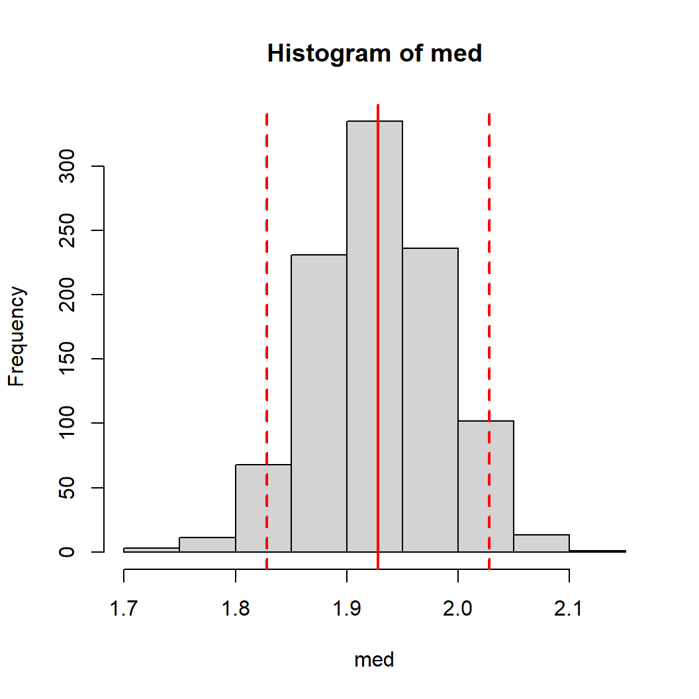
P[Med. Amost. ∈ (Med. Pop. ± 0.1)] ≈ 0.926LECON/DEST - UFES
Observação
Muitas vezes é de interesse determinar a distribuição de uma função de va’s \(X_1, \ldots, X_n\).
Exemplo 1: Um sistema de transações é composto por dois componentes idênticos independentes. Quando o primeiro falha (com probabilidade \(p\)), é imediatamente substituido pelo outro. Seja \(X_i\) o número de transações até a falha do componente \(i\). Então \(X_i\sim\text{Geo}(p)\). Qual a distribuição de \(Y = X_1 + X_2\)?
Definição - Caso discreto
| \(\displaystyle p_Y(y) = \underset{x_i\ :\ h(x_1,\ldots, x_n)\ =\ y}{\sum \cdots \sum} p(x_1, \ldots, x_n)\). |
| \(p_Y(y)\) | \(=\) | \({\displaystyle\underset{x_1,\ x_2\ :\ x_1\ +\ x_2\ =\ y}{\sum \sum} p(x_1, x_2) = \sum_{x_1 = 1}^{y-1} \sum_{x_2 = y-x_1}^{y-x_1} (1-p)^{x_1+x_2-2}p^2 = \sum_{x_1 = 1}^{y-1} (1-p)^{y-2}p^2}\) |
| \(=\) | \({\displaystyle (y-1)(1-p)^{y-2}p^2 = {y-1 \choose 1} (1-p)^{y-2}p^2}\). |
Portanto, \(Y \sim \text{BN}(2,p)\).
Observação
O Exemplo 1 pode ser generalizado. Mais precisamente, se \(X_1, \ldots, X_k\) são vad’s independentes com \(X_i \sim \text{Geo}(p)\) e \(Y = \sum_{i=1}^k X_i\), então é possível mostrar que \(Y \sim \text{BN}(k, p)\). Isto é, soma de va’s geométricas independentes tem distribuição binomial negativa.
Exemplo 2: Uma pessoa chega no caixa em um tempo \(X_1\) após o instante 0 e uma segunda \(X_2\) instantes após a primeira. Se \(X_1\) e \(X_2\) são independentes e \(X_i \sim \text{Exp}(\lambda)\), qual é distribuição de \(Y = X_1 + X_2\)?
Definição - Caso contínuo
| \(\displaystyle F_Y(y) = P(Y \leq y) = P(h(X_1, \ldots, X_n) \leq y) = \underset{x_i\ :\ h(x_1,\ldots, x_n)\ \leq\ y}{\int \cdots \int} f(x_1, \ldots, x_n) dx_1 \cdots dx_n\). |
Observação
Pela definição, não obtemos diretamente \(f_Y(y)\). Devemos obter \(F_Y(y)\) e então calcular \(f_Y(y) = \frac{d}{dy}F_Y(y)\).
| \(F_Y(y)\) | \(=\) | \({\underset{x_1\ +\ x_2\ \leq\ y}{\int \int} f(x_1, x_2) dx_1 dx_2 = \int_{0}^{y} \int_{0}^{y-x_2} \lambda^2 e^{-\lambda (x_1 + x_2)} dx_1 dx_2 = \int_{0}^{y} \lambda e^{-\lambda x_2} [-e^{-\lambda x_1}|_{0}^{y-x_2}] dx_2}\) |
| \(=\) | \({ \int_{0}^{y} \lambda e^{-\lambda x_2} [1-e^{-\lambda (y-x_2)}] dx_2 = \int_{0}^{y} \lambda e^{-\lambda x_2} - \lambda e^{-\lambda y} dx_2 = [-e^{-\lambda x_2} - \lambda x_2 e^{-\lambda y}|_{0}^{y}]}\) | |
| \(=\) | \({-e^{-\lambda y} - \lambda ye^{-\lambda y} + 1 - 0}\). |
| \(f_Y(y) = \frac{d}{dy}F_Y(y) = \frac{d}{dy}[-e^{-\lambda y} - \lambda ye^{-\lambda y} + 1] = \lambda e^{-\lambda y} - \lambda e^{-\lambda y} + \lambda^2 y e^{-\lambda y} = \frac{1}{(\frac{1}{\lambda})^2\Gamma(2)}y^{2-1}e^{-\frac{y}{\lambda^{-1}}}\). |
Portanto, \(Y \sim \text{Gama}(2, \lambda^{-1})\).
Observação
O Ex. 2 pode ser extendido. Se \(X_1, \ldots, X_n\) são vac’s independentes com \(X_i \sim \text{Exp}(\lambda)\) e \(Y = \sum_{i=1}^n X_i\), então \(Y \sim \text{Gama}(n, \lambda^{-1})\). Isto é, soma de exponenciais independentes tem distribuição gama.
Observações
Definição - Amostra Aleatória
Seja \(X\) va e \(X_1, \ldots, X_n\) va’s independentes com a mesma distribuição que \(X\). Dizemos que \(X_1, \ldots, X_n\) é uma amostra aleatória (aa) de \(X\). Nesse caso, podemos dizer que \(X\) descreve a variável na população.
Definição - Estatística
Seja \(X_1, \ldots, X_n\) aa de \(X\). Uma estatística \(T\) é qualquer função \(T = T(X_1, \ldots, X_n)\) da referida amostra.
Definição - Distribuição Amostral
Seja \(X_1, \ldots, X_n\) aa de \(X\) e \(T = T(X_1, \ldots, X_n)\) uma estatística. Dizemos que a fda \(F_T(t) = P(T \leq t) = P(T(X_1,\ldots, X_n) \leq t)\) é a distribuição amostral de \(T\).
Observações
Observação
Se a distribuição populacional e/ou se a estatística for muito complicada, a obtenção analítica da distribuição populacional pode ser muito difícil. Nesses casos, podemos utilizar métodos de Monte Carlo (técnica computacional) para obter uma aproximação da distribuição amostral da estatística de interesse.
| \(\tilde{X} = T(X_1, \ldots, X_n) = \begin{cases} \frac{X_{(n/2)} + X_{(n/2+1)}}{2}, & n \text{ par}; \\ X_{(n+1)/2}, & n \text{ par}. \end{cases}\). |
Isto é, \(\tilde{X}\) é a mediana amostral. Qual a distribuição amostral de \(\tilde{X}\) se \(n=20\) e \(n=40\)? A estatística e a distribuição populacional são complexas para uma análise analítica. Podemos usar métodos de Monte Carlo.
# parâmetros da Weibull(a,b)
a <- 10; b<- 2
# Quantidade de réplicas
R <- 1000
# Tamanho da aa
n <- 20
# Vetor vazio para armazenar as medianas amostrais de cada réplica
med <- NULL
# Inicia as réplicas de Monte Carlo
for(r in 1:R){
# Gera uma aa de tamanho n da Weibull(a, b)
x <- rweibull(n=n, shape = a, scale = b)
# Calcula a mediana amostral da amostra x
med[r] <- median(x)
}
# Mediana populacional
med_pop <- b*(log(2))^(1/a)
# Histograma da distribuição amostral da mediana amostral
hist(med)
# Traça a mediana da população e intervalo +0.1 ou -0.1 desse valor
abline(v = med_pop + c(-.1,0,.1), col = 'red', lty = c(2,1,2), lwd = 2)
# Prop. das medianas amostrais entre med_pop - 0.1 e med_pop + 0.1
mean(med > med_pop-.1 & med < med_pop+.1)
P[Med. Amost. ∈ (Med. Pop. ± 0.1)] ≈ 0.926# parâmetros da Weibull(a,b)
a <- 10; b<- 2
# Quantidade de réplicas
R <- 1000
# Tamanho da aa
n <- 40
# Vetor vazio para armazenar as medianas amostrais de cada réplica
med <- NULL
# Inicia as réplicas de Monte Carlo
for(r in 1:R){
# Gera uma aa de tamanho n da Weibull(a, b)
x <- rweibull(n=n, shape = a, scale = b)
# Calcula a mediana amostral da amostra x
med[r] <- median(x)
}
# Mediana populacional
med_pop <- b*(log(2))^(1/a)
# Histograma da distribuição amostral da mediana amostral
hist(med)
# Traça a mediana da população e intervalo +0.1 ou -0.1 desse valor
abline(v = med_pop + c(-.1,0,.1), col = 'red', lty = c(2,1,2), lwd = 2)
# Prop. das medianas amostrais entre med_pop - 0.1 e med_pop + 0.1
mean(med > med_pop-.1 & med < med_pop+.1)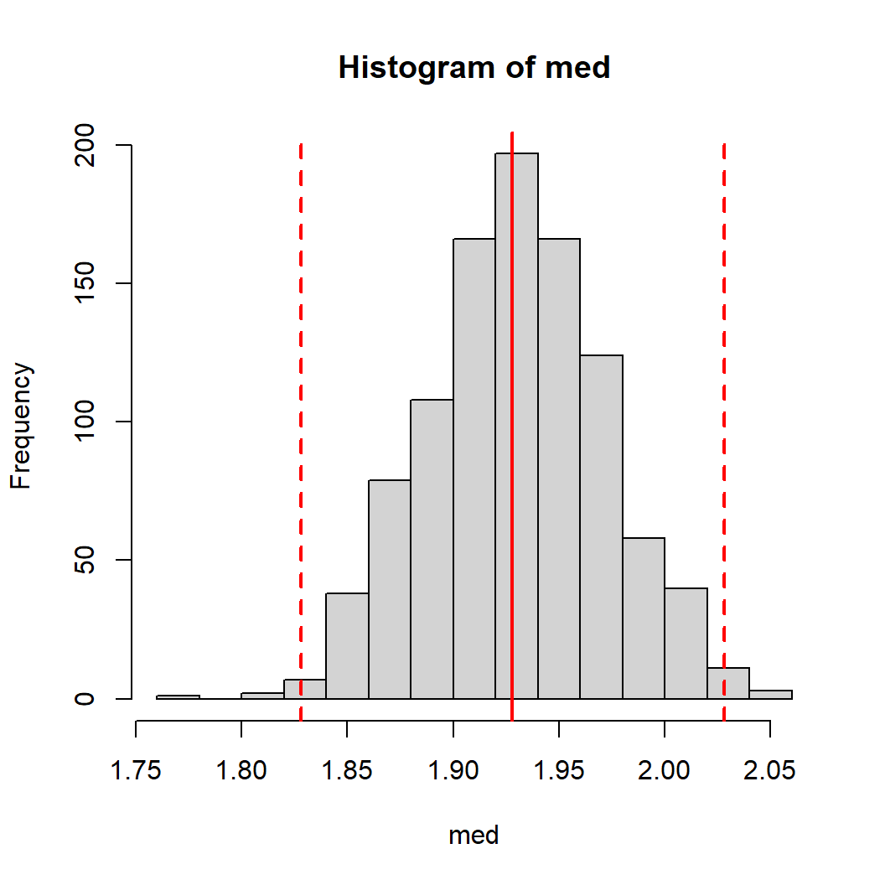
P[Med. Amost. ∈ (Med. Pop. ± 0.1)] ≈ 0.983Observação
Embora a distribuição amostral dependa da distribuição da população, no caso da estatística média amostral, \(\bar{X} = \frac{1}{n}\sum_{i=1}^n X_i\), o Teorema Central do Limite nos fornece a sua distribuição amostral limite, independente da distribuição populacional.
Propriedade - Teorema Central do Limite (TCL)
| \({\displaystyle Z_n = \frac{\bar{X} - \mu}{\sigma/\sqrt{n}}}\) |
tem distribuição aproximadamente normal padrão. A aproximação fica melhor com o aumento de \(n\).
Observações
Propriedades - Corolário do TCL
| \({\displaystyle Z_n = \frac{S_n - n\mu}{\sigma\sqrt{n}}}\) |
tem distribuição aproximadamente normal padrão.
R <- 1000; nn <- c(15, 30, 100)
a <- 0; b <- 10
mu <- (a+b)/2; sig2 <- (b-a)^2/12
medias <- matrix(NA, ncol=length(nn), nrow=R)
for(i in 1:length(nn)){
n <- nn[i]
for(r in 1:R){
x <- runif(n = n, min = 0, max = 10)
medias[r, i] <- mean(x)
}
}
rng <- range(medias); xx <- seq(rng[1], rng[2], length.out=1000)
for(i in 1:length(nn)){
par(family = "serif", mar=c(5,4,1,2))
hist(medias[, i], probability=TRUE, xlim = rng, xlab = '', main='', ylab='')
mtext(text = paste('n = ',nn[i],sep=''), side = 1, line = 2)
mtext(text = 'Densidade', side = 2, line = 2)
lines(xx, dnorm(xx, mu, sqrt(sig2/nn[i])), col='red', lwd=2)
}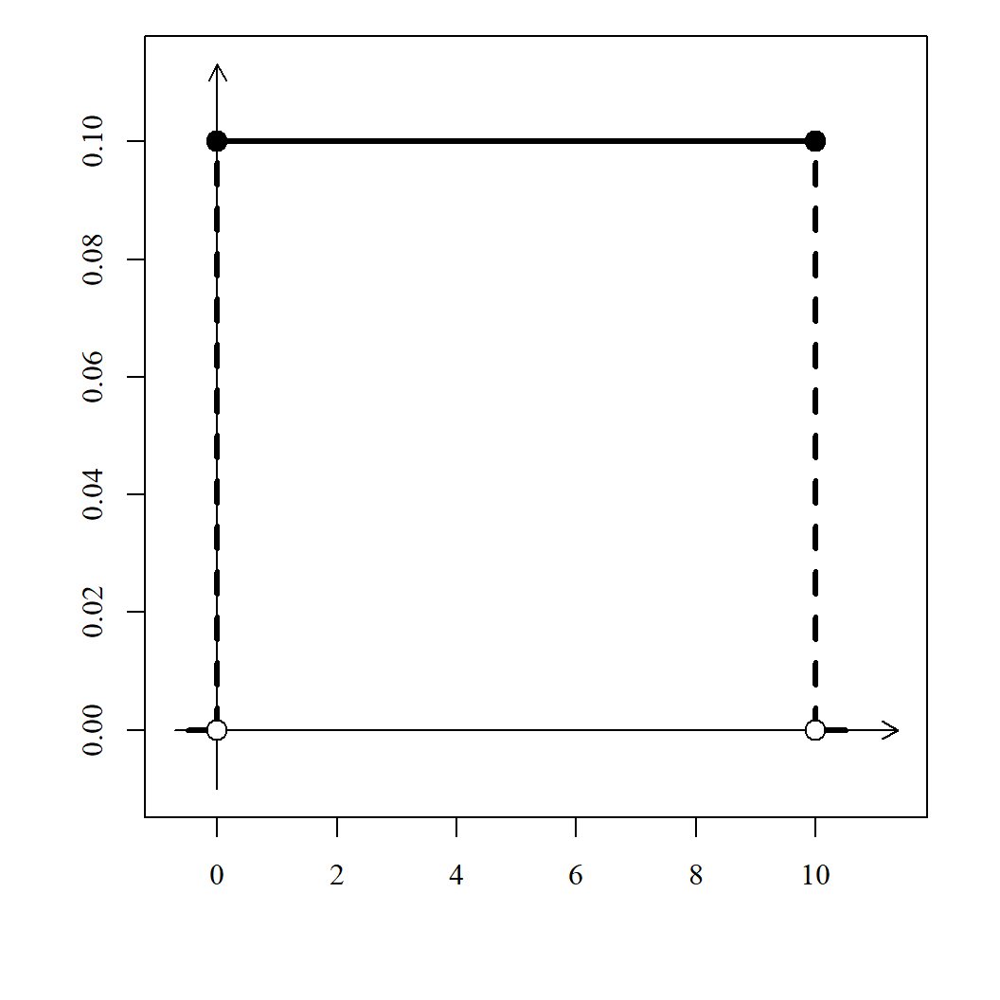
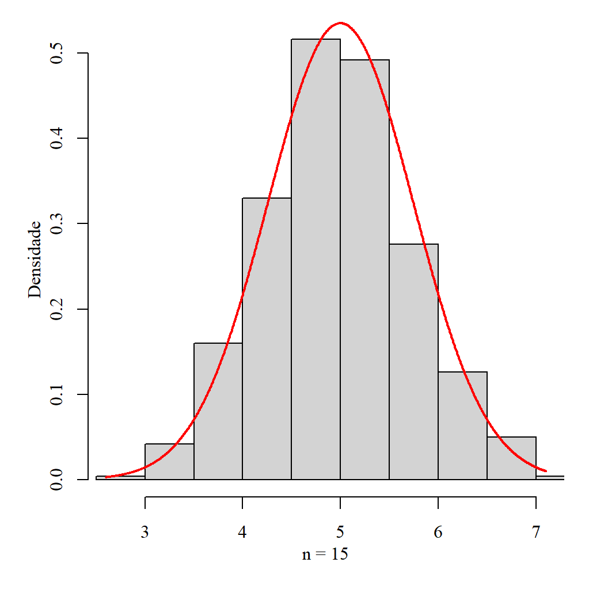
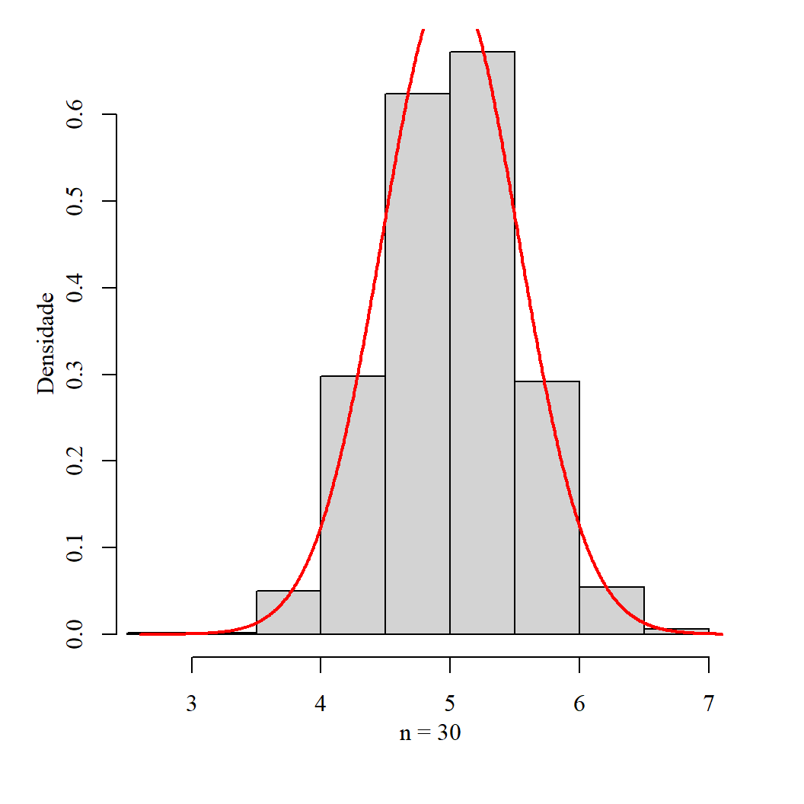
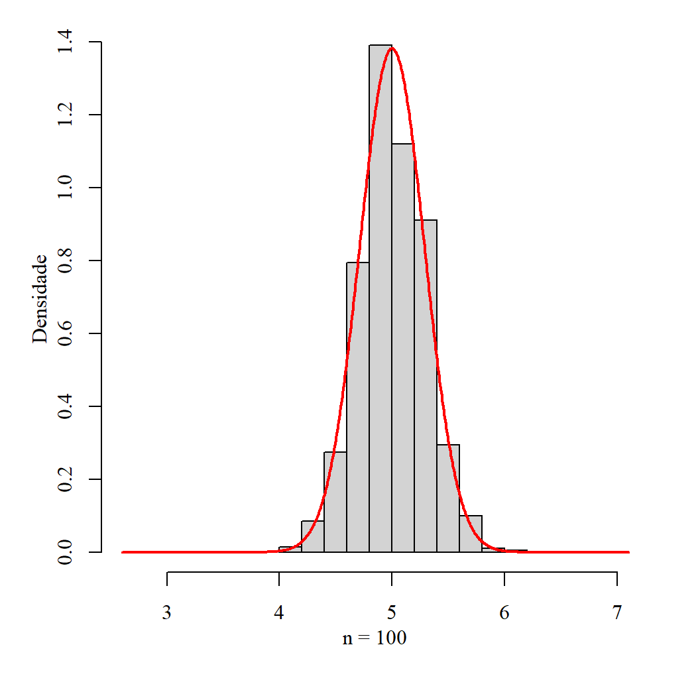
R <- 1000; nn <- c(15, 30, 100)
lambda <- 0.5
mu <- 1/lambda; sig2 <- 1/(lambda^2)
medias <- matrix(NA, ncol=length(nn), nrow=R)
for(i in 1:length(nn)){
n <- nn[i]
for(r in 1:R){
x <- rexp(n = n, rate = lambda)
medias[r, i] <- mean(x)
}
}
rng <- range(medias); xx <- seq(rng[1], rng[2], length.out=1000)
for(i in 1:length(nn)){
par(family = "serif", mar=c(5,4,1,2))
hist(medias[, i], probability=TRUE, xlim = rng, xlab = '', main='', ylab='')
mtext(text = paste('n = ',nn[i],sep=''), side = 1, line = 2)
mtext(text = 'Densidade', side = 2, line = 2)
lines(xx, dnorm(xx, mu, sqrt(sig2/nn[i])), col='red', lwd=2)
}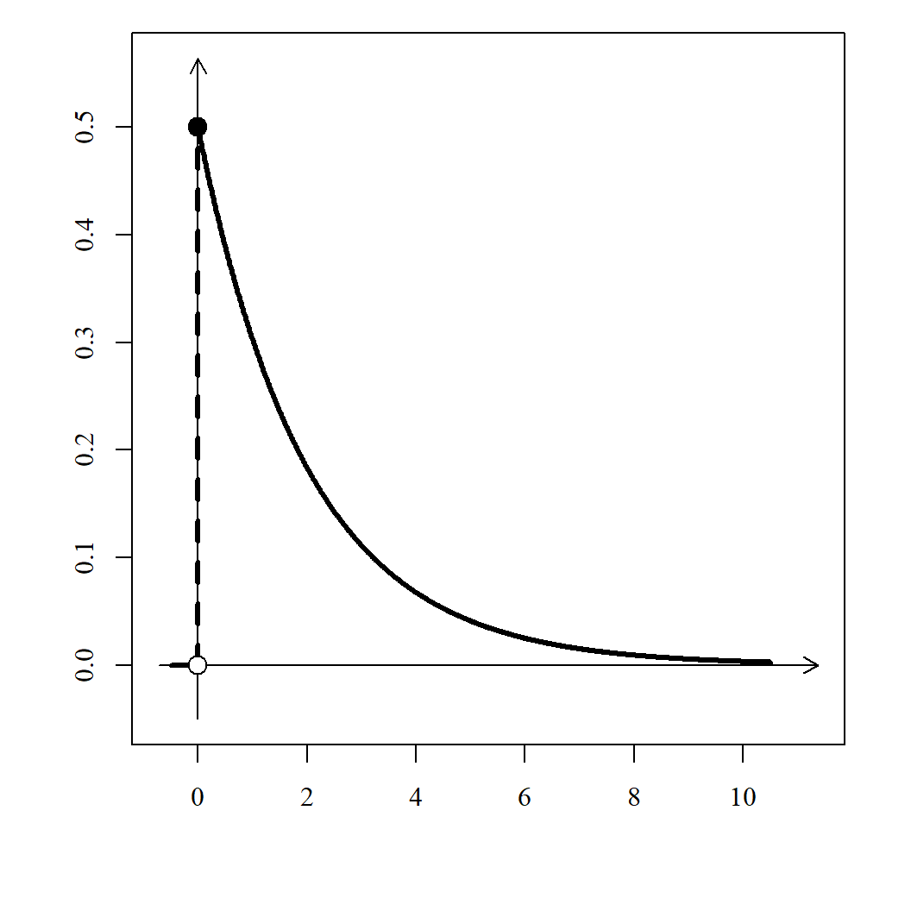
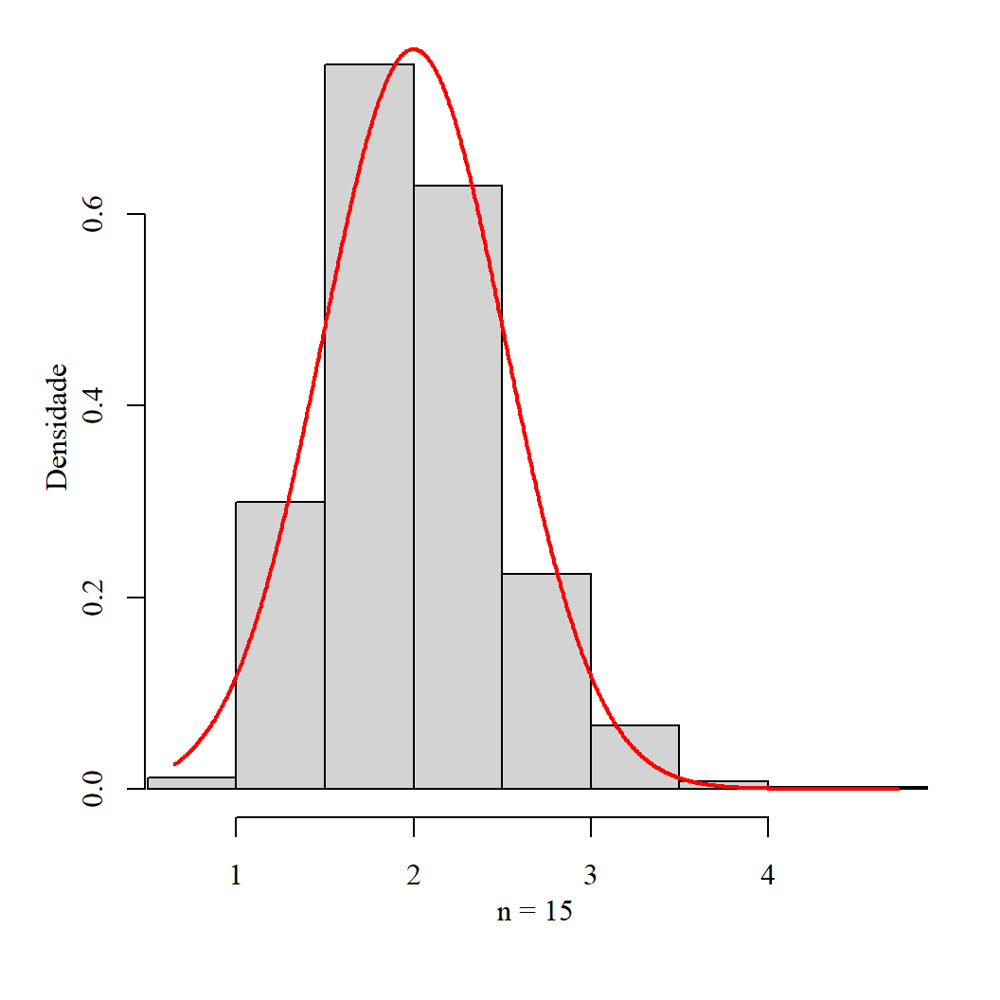
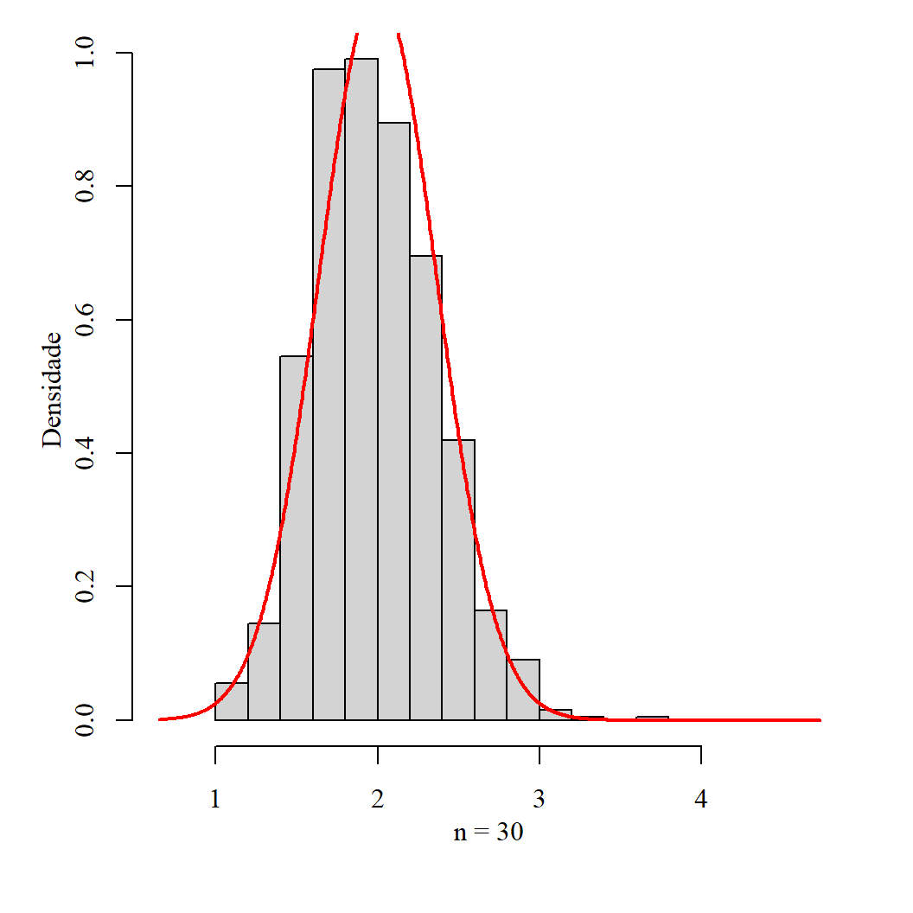
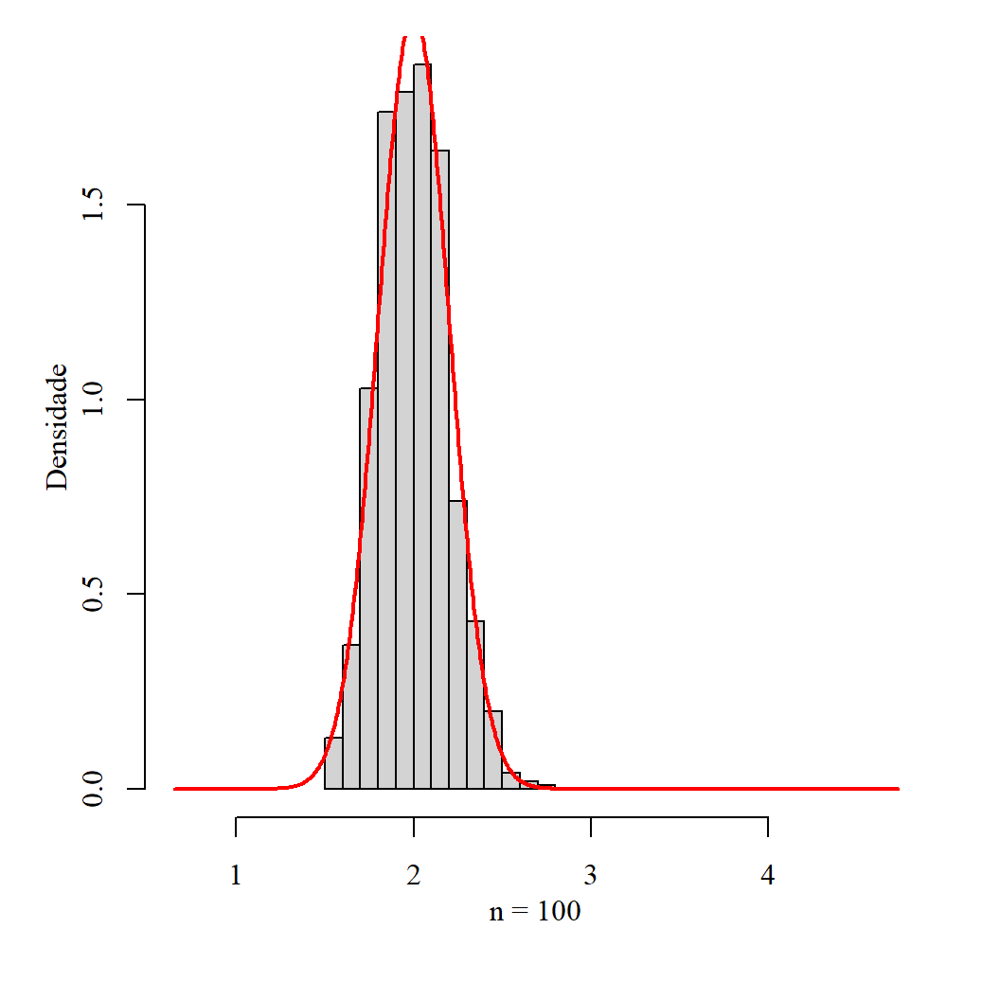
Exemplo 2 (cont.): Tinhamos uma aa de uma população \(X \sim \text{Exp}(\lambda)\). Note que \(\mu = E(X) = \frac{1}{\lambda}\) e \(\sigma^2 = V(X) = \frac{1}{\lambda^2}\). Vimos que a distribuição exata do total amostral era uma \(\text{Gama}(n, \frac{1}{\lambda})\).
Suponha que temos \(\lambda = 0.5\) e desejamos encontrar \(P(\bar{X} \leq \mu - 0.5) = P(S_n \leq n\mu - 0.5n)\), cujo valor exato pela gama é 0.1248, se \(n=20\) e 0.0463, se \(n=40\), por exemplo.
Agora, temos que| \(P(S_n \leq n\mu - 0.5n)\) | \(=\) | \(P(\frac{\bar{X} - \mu}{\sigma/\sqrt{n}} \leq \frac{\mu - 0.5 - \mu}{\sigma/\sqrt{n}}) = P(Z_n \leq -\frac{\lambda\sqrt{n}}{2})\) |
| \(\approx\) | \({\displaystyle \begin{cases} P(Z \leq -1.12) = 0.1314, & n=20;\\ P(Z \leq -1.58) = 0.0571, & n=40. \end{cases}}\) |
Observação
Note que, considerando a assimetria da população (\(X\sim\text{Exp}(0.5)\)), as probabilidades exatas e a aproximadas são relativamente próximas, mesmo para valores de \(n\) moderados.
Exemplo 3: A resistência à ruptura de um rebite possui valor médio de 10000 psi e desvio padrão de 500 psi. Qual é a probabilidade de a resistência à ruptura média de uma amostra aleatória de 40 rebites estar entre 9900 e 10200?
Note que o enunciado nos fornece que \(\mu = E(X) = 10000\), \(\sigma = 500\) e \(n = 40\). Desejamos obter \(P(9900 < \bar{X} < 10200)\).
| \(P(9900 < \bar{X} < 10200)\) | \(=\) | \(P(\frac{9900 - 10000}{500/\sqrt{40}} < \frac{\bar{X} - \mu}{\sigma/\sqrt{n}} < \frac{10200 - 10000}{500/\sqrt{40}}) \approx P(-1.27 < Z < 2.53)\) |
| \(=\) | \(\Phi(2.53) - \Phi(-1.27) = 0.9943 - 0.1020 = 0.8923\). |
Observação
Note que sequer foi necessário o conhecimento da distribuição da população. Apenas especificamos sua média \(\mu\) e desvio-padrão \(\sigma\). Claro que estamos supondo que \(n = 40\) é suficientemente grande para o TCL fornecer boa aproximação.
Observação
Normalmente, usamos estatísticas para aproximar o valor de algum parâmetro populacional. Nesse caso, elas recebem um nome especial.
Definição
Um estimador é uma estatística utilizada para aproximar o valor de um parâmetro populacional.
Observação
Podemos dividir a tarefa de estimação de parâmetros em:
Definição
Sejam \(X_1, \ldots, X_n\) uma aa de uma população \(X\) e \(\theta\) um parâmetro. Um estimador \(\hat\theta\) de \(\theta\) é qualquer função da aa \(\hat\theta = \hat\theta(X_1, \ldots, X_n)\) utilizada para aproximar o valor de \(\theta\). Uma Estimativa é o valor observado de um estimador para uma amostra \(x_1, \ldots, x_n\) específica.
Problema
Sendo possível definir diversos estimadores para \(\theta\), como avaliar a qualidade de diferentes estimadores?
Observação
Existem diferentes medidas. Veremos: Vício; Erro-padrão; e Erro Quadrático Médio (EQM).
Observação
Deve ser esperado de um bom estimador que ele forneça o verdadeiro valor do parâmetro.
Definição
| \(B(\hat\theta) = E(\hat\theta) - \theta = \mu_{\hat\theta} - \theta;\) |
onde \(\mu_{\hat\theta} = E(\hat\theta)\) é o valor esperado de \(\hat\theta\).
Observações
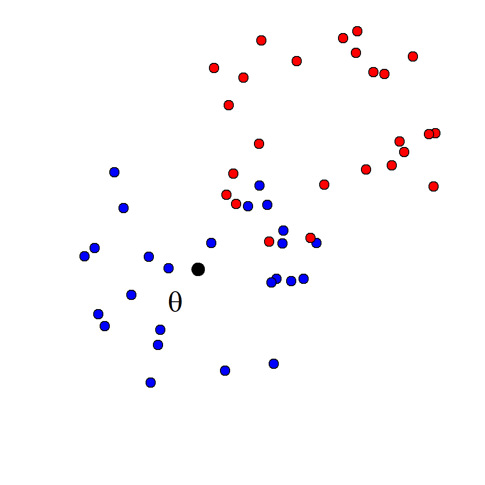
Observação
Ilustração de estimativas fornecidas por um estimador não viesado e um viesado de um parâmetro \(\theta\).
Suponha que serão observadas \(n − 1 \geq 1\) observações \(X_1, \ldots, X_{n-1}\) de \(X\), com \(E(X) = \mu\). Defina a média dessas \(n-1\) observações por \(\bar{X}_{n-1} = \frac{1}{n-1}\sum_{i=1}^{n-1}\).
| \(\hat{\mu}_1 = \frac{n-1}{n}\bar{X}_{n-1} + \frac{1}{n}X_n\) | e | \(\hat{\mu}_2 = \frac{\bar{X}_{n-1} + X_n}{2}\). |
Qual é o vício de \(\hat{\mu}_1\) e \(\hat{\mu}_2\)?
| \(E(\hat{\mu}_1) = E\left[\frac{n-1}{n}\bar{X}_{n-1} + \frac{1}{n}X_n\right] = \frac{n-1}{n}E(\bar{X}_{n-1}) + \frac{1}{n}E(X_n) = \frac{n-1}{n}\mu + \frac{1}{n}\mu = \mu.\) |
e que
| \(E(\hat{\mu}_2) = E\left[\frac{\bar{X}_{n-1} + X_n}{2}\right] = \frac{E(\bar{X}_{n-1}) + E(X_n)}{2} = \frac{\mu + \mu}{2} = \mu.\) |
Assim, \(B(\hat{\mu}_1) = B(\hat{\mu}_2) = \mu-\mu = 0\). Portanto, ambos são não viesados.
Exemplo 5: Verifiquemos que \(\hat{\sigma}^2 = \frac{1}{n}\sum_{i=1}^n(X_i - \bar{X})^2\) é um estimador viesado de \(\sigma^2\). De fato,
| \(E(\hat{\sigma}^2)\) | \(=\) | \(\frac{1}{n}\sum_{i=1}^nE[(X_i-\bar{X})^2]=\frac{1}{n}\sum_{i=1}^n E[(X_i-\mu-(\bar{X}-\mu))^2]\) |
| \(=\) | \(\frac{1}{n} \sum_{i=1}^n E[(X_i-\mu)^2-2(X_i-\mu)(\bar{X}-\mu)+(\bar{X}-\mu)^2]\) | |
| \(=\) | \(\frac{1}{n}\sum_{i=1}^n\left\{\sigma^2-2E\left[(X_i-\mu)\left(\frac{1}{n}\sum_j(X_j-\mu)\right)\right] + E[(\bar{X}-\mu)^2]\right\}\) | |
| \(=\) | \(\frac{1}{n}\sum_{i=1}^n\left\{\sigma^2-\frac{2}{n}\sum_jE[(X_i-\mu)(X_j-\mu)] + \frac{\sigma^2}{n}\right\}\) | |
| \(=\) | \(\frac{1}{n}\sum_{i=1}^n\left\{\sigma^2-\frac{2}{n}\sum_j\text{Cov}(X_i, X_j) + \frac{\sigma^2}{n}\right\}\) | |
| \(=\) | \(\frac{1}{n}\sum_{i=1}^n\left\{\sigma^2-\frac{2\sigma^2}{n}+\frac{\sigma^2}{n}\right\}=\sigma^2 \color{red}{-\frac{\sigma^2}{n}}\). |
Exercício
Tendo em vista o Exemplo 5, mostre que \(S^2 = \frac{1}{n-1}\sum_{i=1}^n(X_i - \bar{X})^2\) é um estimador não viesado de \(\sigma^2\).
Observações
Definição
Seja \(\hat{\theta}\) estimador de \(\theta\). O erro-padrão (\(EP(\hat{\theta})\)) de \(\hat{\theta}\) é o desvio-padrão de \(\hat{\theta}\), isto é, \(EP(\hat{\theta})=\sqrt{V(\hat{\theta})}\).
Definição
Sejam \(\hat{\theta}_1\) e \(\hat{\theta}_2\) estimadores não viesados de \(\theta\). Dizemos que \(\hat{\theta}_1\) é mais eficiente que \(\hat{\theta}_2\) se \(EP(\hat{\theta}_1) < EP(\hat{\theta}_2)\).
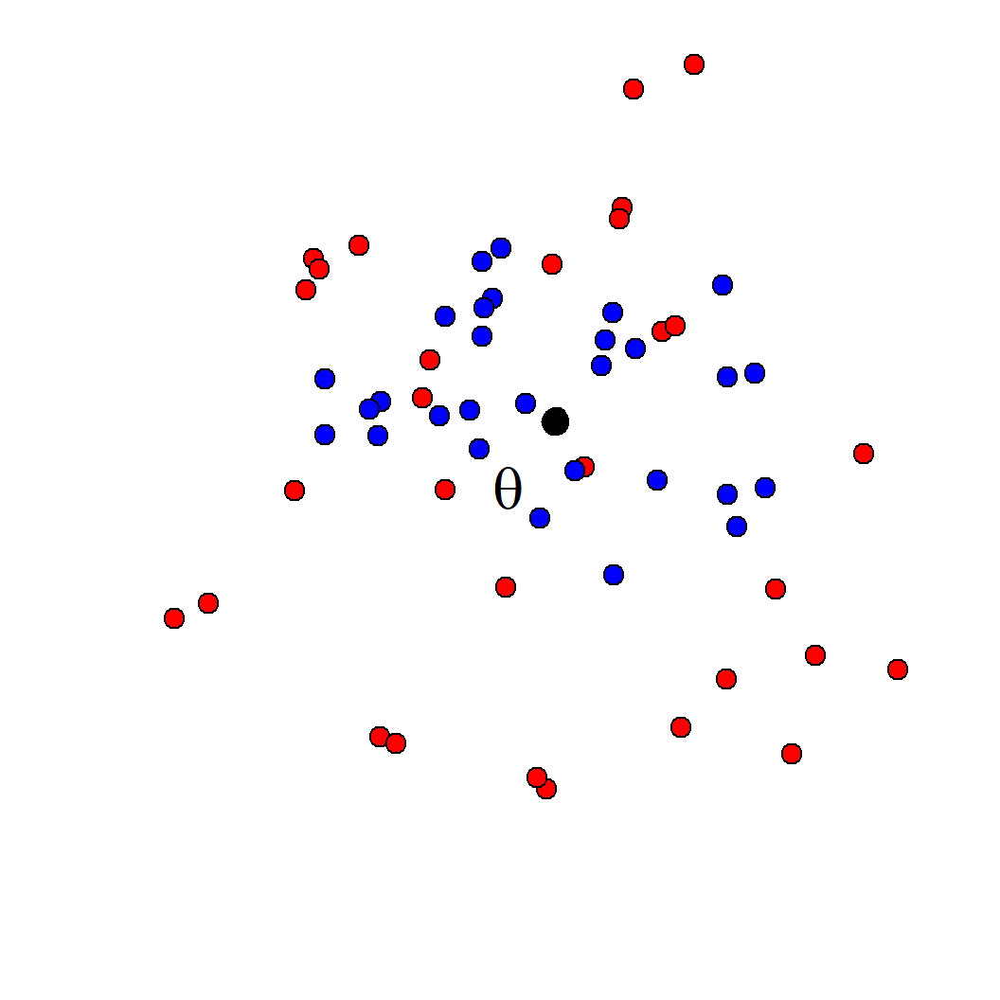
Observação
Ilustração de estimativas fornecidas por dois estimadores \(\hat\theta_1\) e \(\hat\theta_2\) de um parâmetro \(\theta\), em que \(\hat\theta_1\) é mais eficiente que \(\hat\theta_2\).
| \({\displaystyle V(\hat{\mu}_1) = V\left(\frac{n-1}{n}\bar{X}_{n-1}+\frac{1}{n}X_n\right) = \left(\frac{n-1}{n}\right)^2\frac{\sigma^2}{n-1}+\frac{1}{n^2}\sigma^2 = \frac{n-1+1}{n^2}\sigma^2=\frac{1}{n}\sigma^2}\) |
| \({\displaystyle V(\hat{\mu}_2) = V\left(\frac{\bar{X}_{n-1}+X_n}{2}\right) = \frac{1}{4}(V(\bar{X}_{n-1})+V(X_n)) = \frac{1}{4} \left(\frac{\sigma^2}{n-1} + \sigma^2\right)=\frac{n}{4(n-1)}\sigma^2}\). |
| \({\displaystyle V(\hat{\mu}_1) < V(\hat{\mu}_2) \Rightarrow \frac{\sigma^2}{n} < \frac{n\sigma^2}{4(n-1)} \Rightarrow n^2-4n+4>0 \Rightarrow (n-2)^2>0}\). |
Assim, \(\hat{\mu}_1\) é mais eficiente do que \(\hat{\mu}_2\) se \((n-2)^2>0 \Rightarrow n > 2\). Se \(n = 2\) ambos estimadores são igualmente eficientes.
Observação
Vimos que o Erro-Padrão nos permite comparar a eficiência de estimadores não viesados. Para comparar estimadores com vícios diferentes, podemos usar o Erro Quadrático Médio.
Definição
| \(EQM(\hat{\theta})=E[(\hat{\theta}-\theta)^2]\). |
Exercícios
| \(EQM(\hat{\theta})=[B(\hat{\theta})]^2+V(\hat{\theta})\). |
No Exemplo 5, mostramos que \(B(\hat{\sigma}^2)=-\frac{\sigma^2}{n}\). É possível mostrar que \(B(S^2)=0\) e que, se \(X\sim N(\mu,\sigma^2)\), então
| \({\displaystyle V(S^2)=\frac{2\sigma^4}{n-1}}\) | e | \({\displaystyle V(\hat{\sigma}^2) = \left( \frac{n-1}{n} \right)^2 \frac{2\sigma^4}{n-1}}\). |
Logo, os EQM’s de \(S^2\) e de \(\hat{\sigma}^2\) são, respectivamente,
| \({\displaystyle EQM(S^2)=\frac{2\sigma^4}{n-1}}\) | e | \({\displaystyle EQM(\hat{\sigma}^2)=\left(\frac{\sigma^2}{n}\right)^2 + \frac{(n-1)2\sigma^4}{n^2} = \frac{2\sigma^4}{n}-\frac{\sigma^4}{n^2}}\). |
Assim, em termos de EQM, vemos que \(\hat{\sigma}^2\) é melhor do que \(S^2\).
Definição
| \({\displaystyle \lim_{n\to\infty}EQM(\hat{\theta})=0}\). |
Observação
Exemplo 5 (cont.): Como \({\displaystyle \lim_{n\to\infty} EQM(S^2) = \lim_{n\to\infty} EQM(\hat\sigma^2) = 0}\), ambos são consistentes para \(\sigma^2\).
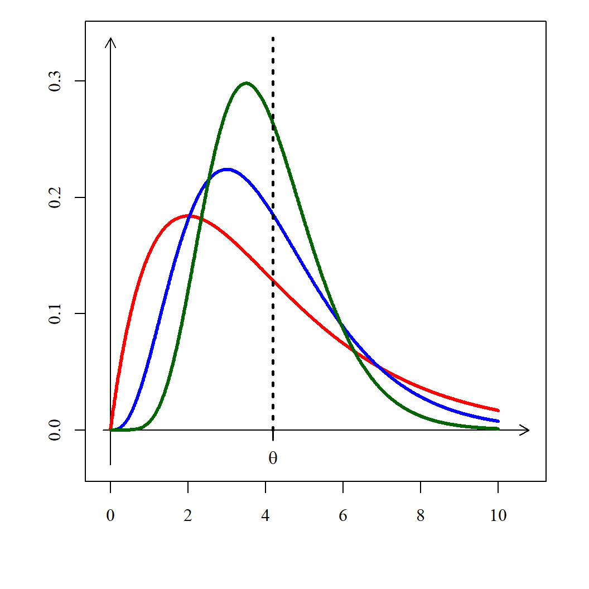
Observação
| \({\displaystyle \color{red}{n}< \color{blue}{n} < \color{darkgreen}{n}}\). |
Observações
Em alguns casos, o estimador é escolhido por seu apelo intuitivo. Por exemplo, é natural usar
Exemplo 6: Qual o estimador mais apropriado para a taxa \(\lambda\) de uma população \(X \sim \text{Exp}(\lambda)\)?
Observação
No Exemplo 6, não há um candidato natural para \(\hat\lambda\). Veremos dois métodos de obtenção de estimadores: o método dos momentos; e o método da máxima verossimilhança.
Observação
Nosso objetivo é encontrar um estimador \(\hat\theta\) do vetor de parâmetros \(\theta = (\theta_1,\ldots, \theta_\kappa)'\) por meio de uma aa \(X_1,\ldots,X_n\) de uma população \(X\).
Definições
Observação
Note que \(\mu^{(k)}=\mu^{(k)}(\theta)\)
Definição
Se o vetor paramétrico \(\theta = (\theta_1,\ldots, \theta_\kappa)'\) tem dimensão \(\kappa\) e os momentos populacionais até a ordem \(\kappa\) são \(\mu^{(1)} = \mu^{(1)}(\theta), \ldots, \mu^{(\kappa)} = \mu^{(\kappa)}(\theta)\). O Estimador de Método dos Momentos (EMM), \(\hat\theta_{\text{MM}}\), é o vetor \(\theta\) que soluciona o sistema de equações \[ \begin{cases} \mu^{(1)}(\theta) &=& \hat{\mu}^{(1)}\\ &\vdots&\\ \mu^{(\kappa)}(\theta) &=& \hat{\mu}^{(\kappa)} \end{cases} \]
Observação
Caso o sistema acima não seja bijetivo (por exemplo, se \(\theta = (\theta_1, \theta_2)'\), mas \(\mu^{(1)}=\mu^{(2)}=\theta_1\)), podemos utilizar momentos populacionais de ordens superiores.
Exemplo 6 (cont.): Temos que, para a população \(X \sim \text{Exp}(\lambda)\), o momento populacional de ordem 1 é \(\mu^{(1)} = E(X) = \frac{1}{\lambda}\). Como o momento amostral de ordem 1 é \(\hat\mu^{(1)} = \bar{X}\), o EMM de \(\lambda\) é o valor \(\hat\lambda_{\text{MM}}\) tal que \(\frac{1}{\hat\lambda_{\text{MM}}} = \bar{X}\). Logo, \(\hat\lambda_{\text{MM}} = \frac{1}{\bar{X}}\).
| \({\displaystyle \hat\mu_{\text{MM}} = \bar{X}}\) | e | \({\displaystyle \hat\sigma_{\text{MM}} = \left(\frac{1}{n}\sum_i X_i^2 - \hat\mu_{\text{MM}}^2\right)^{1/2}}\). |
Exercício
Encontre o EMM do parâmetro \(\theta\) se a população \(X\) tem fdp \(f(x)=\frac{\theta}{x^{\theta+1}}\), \(x>1\).
Definição
| \(\displaystyle L(\theta;x_1,\ldots,x_n) = p(x_1, \ldots, x_n; \theta) = p(x_1;\theta)\cdots p(x_n;\theta) = \prod_{i=1}^n p(x_i;\theta)\). |
| \(\displaystyle L(\theta;x_1,\ldots,x_n) = f(x_1, \ldots, x_n; \theta) = f(x_1;\theta)\cdots f(x_n;\theta) = \prod_{i=1}^n f(x_i;\theta)\). |
Observações
Definição
| \(\DeclareMathOperator*{\aM}{argmax}\hat\theta_{\text{MV}}=\aM_{\theta}[L(\theta;x_1,\ldots,x_n)]\). |
Observações
| \(\left[\left.\frac{\partial}{\partial\theta} \ell(\theta) \right|_{\theta=\hat{\theta}_{\text{MV}}} \right] = \left[\left.\frac{\partial}{\partial\theta}\log\left[L(\theta;x_1,\ldots,x_n) \right]\right|_{\theta=\hat{\theta}_{\text{MV}}} \right] = \sum_{i=1}^{n} \left[ \left.\frac{\partial}{\partial\theta}\log f(x_i;\theta)\right|_{\theta=\hat{\theta}_{\text{MV}}} \right]=0\), |
| \(L(\lambda; x_1, \ldots, x_n) = \prod_{i=1}^n[\lambda e^{-\lambda x_i}] = \lambda^n e^{-\lambda \sum_ix_i} = \lambda^n e^{-\lambda n\bar{x}}\). |
Assim, \(\ell(\lambda) = n\log(\lambda)-\lambda n \bar{x}\) e \(\frac{\partial\ell(\lambda)}{\partial\lambda} = \frac{n}{\lambda} - n\bar{x}\). Como \(\hat\lambda_{\text{MV}}\) satisfaz \(\frac{n}{\hat\lambda_{\text{MV}}} - n\bar{x} = 0\), temos \(\hat\lambda_{\text{MV}} = \frac{1}{\bar{X}}\).
| \(\ell(\mu,\sigma) = -\frac{n}{2}\log(2\pi) - n\log(\sigma) -\frac{1}{2}\sum_i\left(\frac{x_i-\mu}{\sigma}\right)^2\). |
| \(\frac{\partial\ell}{\partial\mu} = \sum_i\left(\frac{x_i-\mu}{\sigma^2}\right) = \frac{n\bar{x} - n\mu}{\sigma^2}\) | e | \(\frac{\partial\ell}{\partial\sigma} = -\frac{n}{\sigma} + \frac{1}{\sigma^3}\sum_i(x_i-\mu)^2\). |
| \(\frac{n\bar{x} - n\hat\mu_{\text{MV}}}{\hat\sigma^2_{\text{MV}}} = 0\) | e | \(-\frac{n}{\hat\sigma_{\text{MV}}} + \frac{1}{\hat\sigma^3_{\text{MV}}}\sum_i(x_i-\hat\mu_{\text{MV}})^2 = 0\), |
o que fornece \(\hat\mu_{\text{MV}} = \bar{X}\) e \(\hat\sigma_{\text{MV}} = \left[\frac{1}{n}\sum_i(X_i - \hat\mu_{\text{MV}})^2\right]^{1/2}\).
Exercício
Determine EMV do parâmetro \(\theta\) se a população \(X\) tem fdp \(f(x)=\frac{\theta}{x^{\theta+1}}\), \(x>1\).
Observações
| \(\left[\left.\frac{\partial \ell(\theta)}{\partial \theta}\right|_{\theta = \hat\theta_{\text{MV}}}\right] = 0\). |
Observações
Definição
| \(P([L,U] \supset \{\theta\}) = P(L < \theta < U) = \gamma\). |
Observações
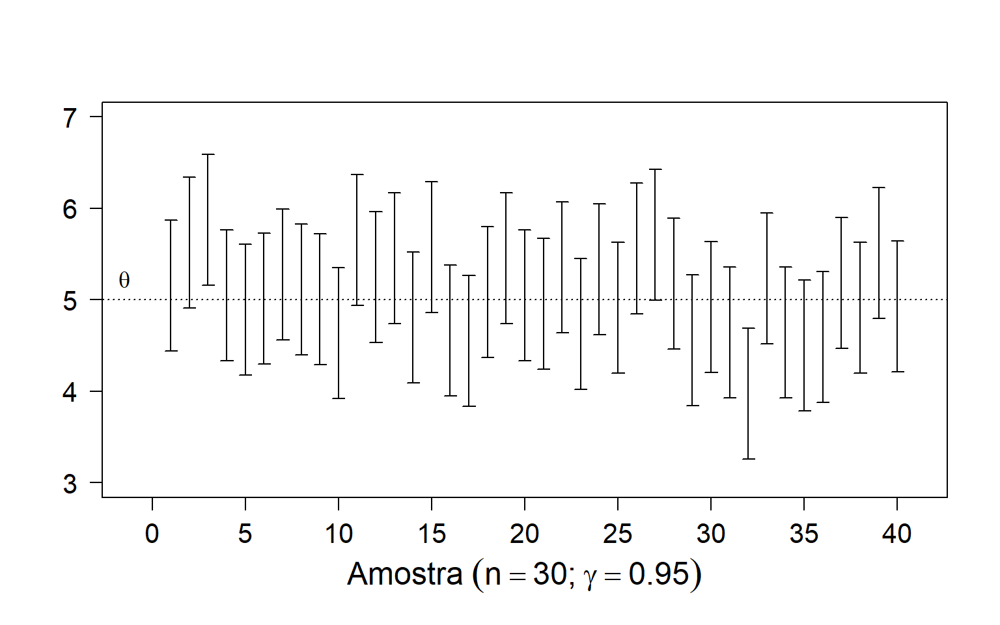
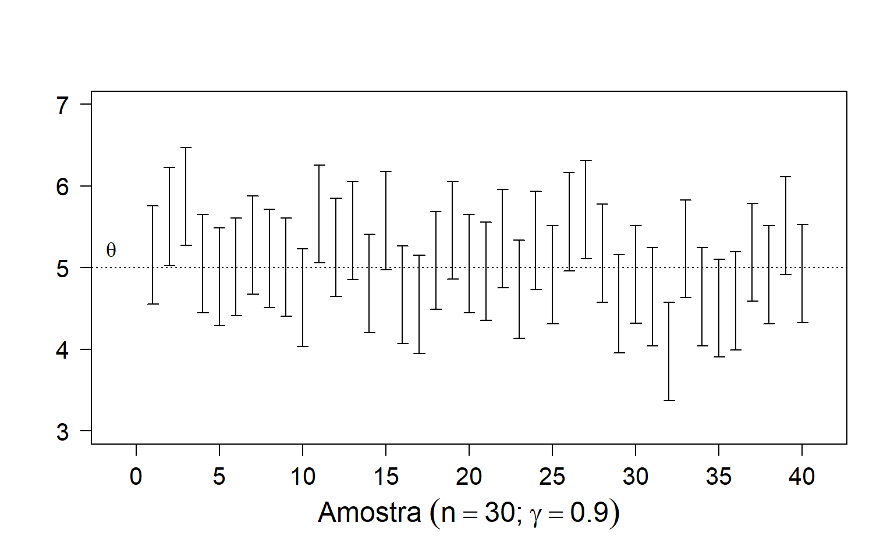
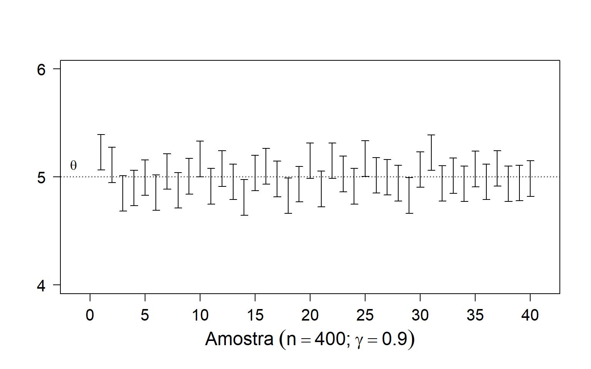
Encontremos um IC para \(\mu\) em função de \(\bar{X}\), assumindo \(\sigma\) conhecido. Seja \(z_{\frac{\gamma}{2}}\) o número tal que \(P\left(-z_{\frac{\gamma}{2}} < Z < z_{\frac{\gamma}{2}}\right) = \gamma\), onde \(Z \sim N(0,1)\). De fato, pelo TCL:
\[ \begin{aligned} \gamma &= P\left(-z_{\frac{\gamma}{2}} < Z < z_{\frac{\gamma}{2}}\right) \approx P\left(-z_{\frac{\gamma}{2}} < Z_n < z_{\frac{\gamma}{2}}\right) \\ &= P\left(-z_{\frac{\gamma}{2}} < \frac{\bar{X} - \mu}{\sigma/\sqrt{n}} < z_{\frac{\gamma}{2}}\right) = P\left(-z_{\frac{\gamma}{2}}\frac{\sigma}{\sqrt{n}} < \bar{X} - \mu < z_{\frac{\gamma}{2}}\frac{\sigma}{\sqrt{n}}\right) \\ &= P\left(\bar{X} - z_{\frac{\gamma}{2}}\frac{\sigma}{\sqrt{n}} < \mu < \bar{X} + z_{\frac{\gamma}{2}}\frac{\sigma}{\sqrt{n}}\right) \end{aligned} \]
Logo um IC para \(\mu\) com coeficiente de confiança \(\gamma\) é dado por:
\[ \text{IC}(\mu; \gamma) = \left[ \bar{X} - z_{\frac{\gamma}{2}}\frac{\sigma}{\sqrt{n}} \; ; \; \bar{X} + z_{\frac{\gamma}{2}}\frac{\sigma}{\sqrt{n}} \right]. \]
Uma máquina estava regulada para encher pacotes de café com peso médio de \(500\text{g}\) e variância de \(196\text{g}^2\). Uma a.a. de \(49\) pacotes forneceu média de \(485\text{g}\). O que podemos dizer sobre a verdadeira média com confiança de \(95\%\)?
Temos que \(\bar{x} = 485\), \(n = 49\), \(\sigma^2 = 196\) e \(\gamma = 0.95\). Primeiramente, \(z_{\frac{\gamma}{2}} = z_{0.475} = 1.96\). Logo,
\[ \text{IC}(\mu; 0.95) = \left[ 485 - 1.96 \times \frac{14}{7}; \; 485 + 1.96 \times \frac{14}{7} \right] = [481.08; 488.92]. \]
Com confiança de \(95\%\) podemos afirmar que a máquina está desregulada.
Observações
Problema
E se \(\sigma^2\) for desconhecida?
Observações
Observações
Propriedade
Se a população tem distribuição normal com média \(\mu\), é possível mostrar que: \[ T = \frac{\bar{X} - \mu}{S/\sqrt{n}} \sim t_{n-1}, \] onde \(T \sim t_\nu\) indica que a v.a. \(T\) segue uma distribuição \(t\)-Student com \(\nu\) graus de liberdade (g.l.).
Observações

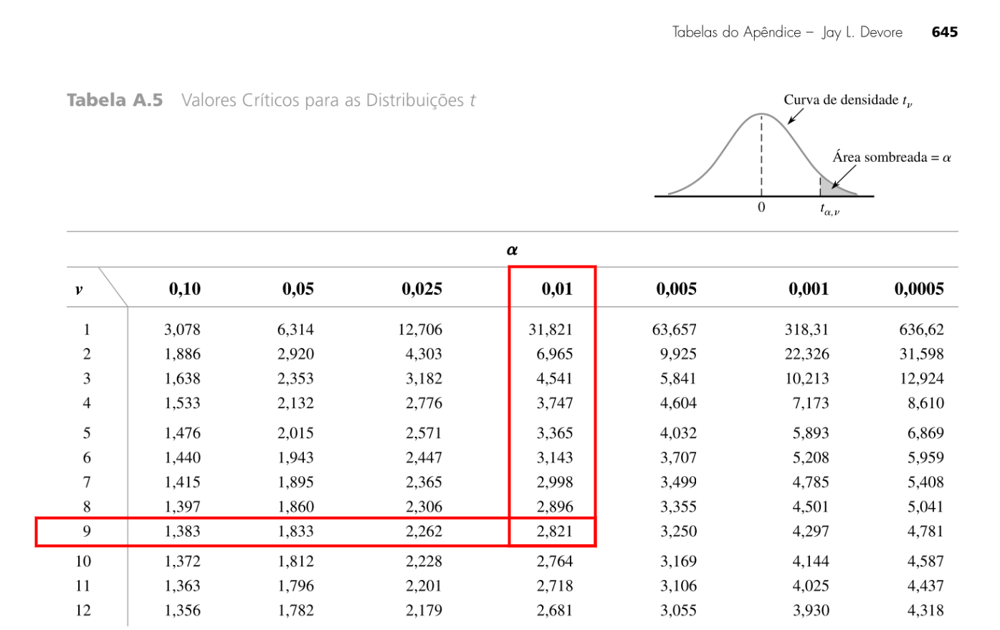
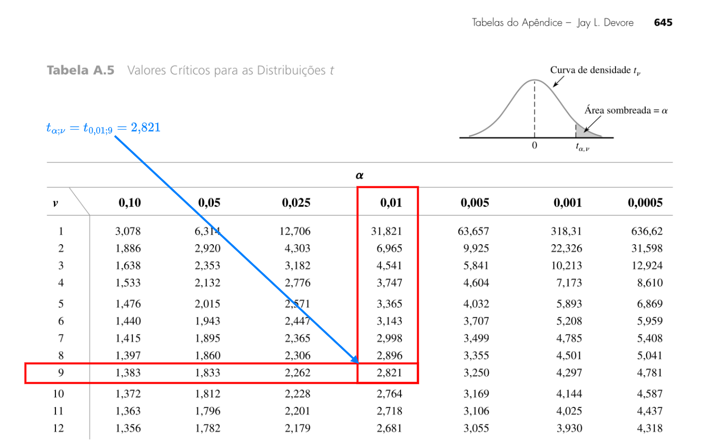
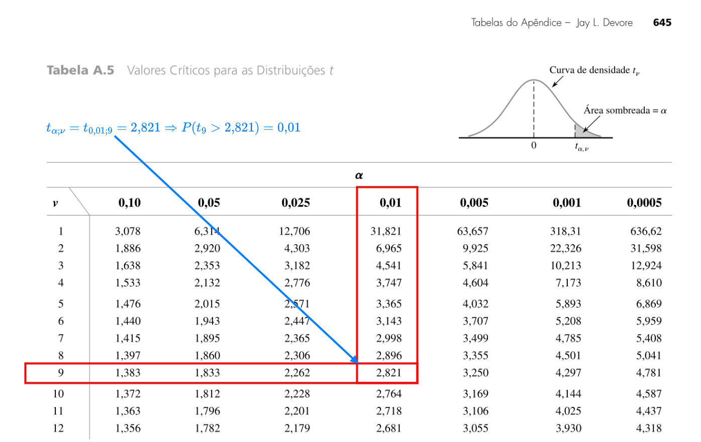
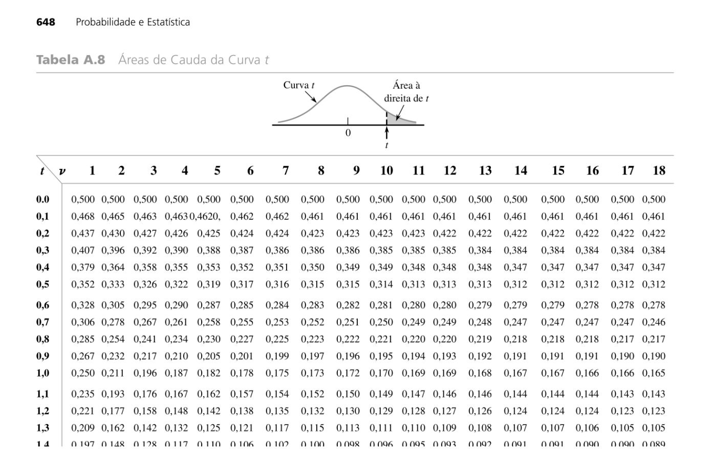
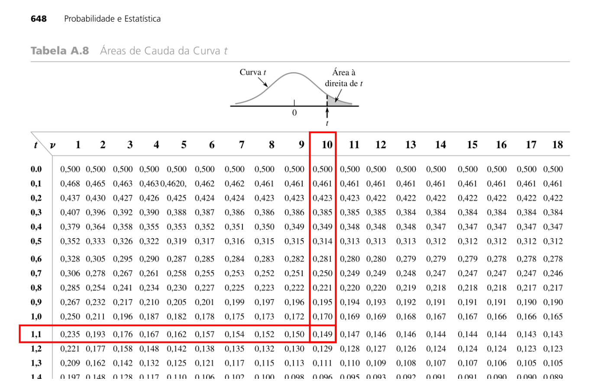
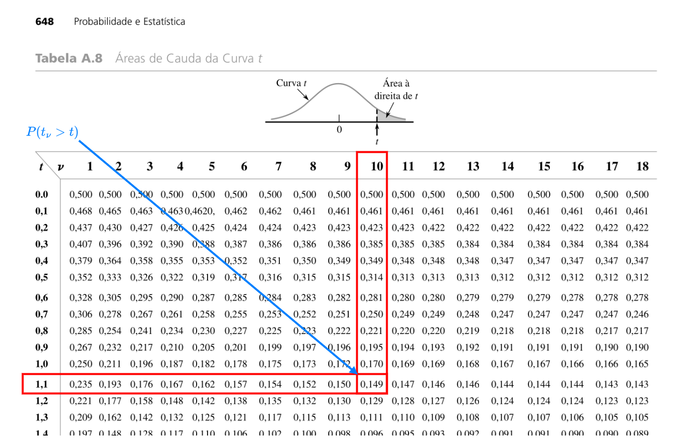
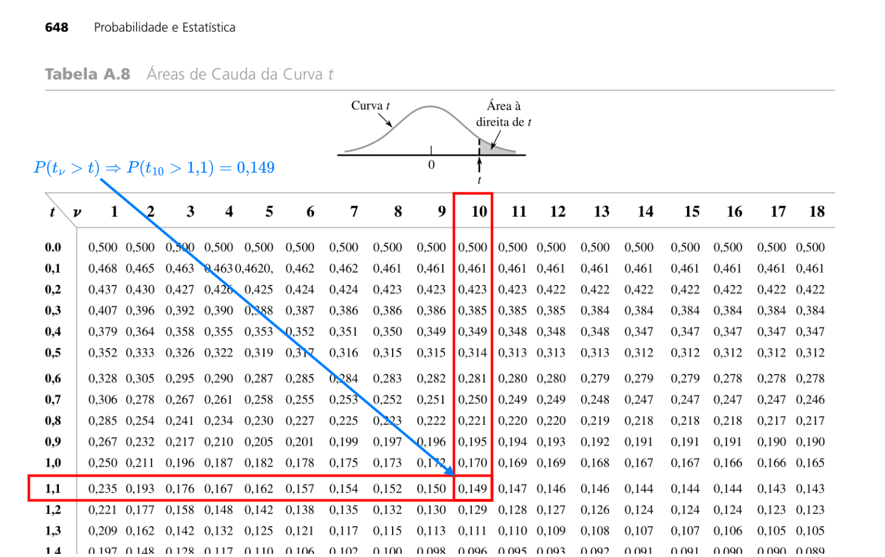
Utilizando o resultado anterior, encontremos um IC para \(\mu\) em função de \(\bar{X}\) e \(S\). Seja \(t_{\alpha,\ \nu}\) o valor tal que \(P(T > t_{\alpha,\ \nu}) = \alpha\), onde \(T \sim t_{\nu}\). Daí, \[ \begin{aligned} \gamma &= P(-t_{\alpha,\ \nu} < T < t_{\alpha,\ \nu}) = P\left(-t_{\alpha,\ \nu} < \frac{\bar{X} - \mu}{S/\sqrt{n}} < t_{\alpha,\ \nu}\right) \\ &= P\left(\bar{X} - t_{\alpha,\ \nu} \frac{S}{\sqrt{n}} < \mu < \bar{X} + t_{\alpha,\ \nu} \frac{S}{\sqrt{n}}\right), \end{aligned} \] em que \(\alpha = \frac{1-\gamma}{2}\) e \(\nu = n-1\).
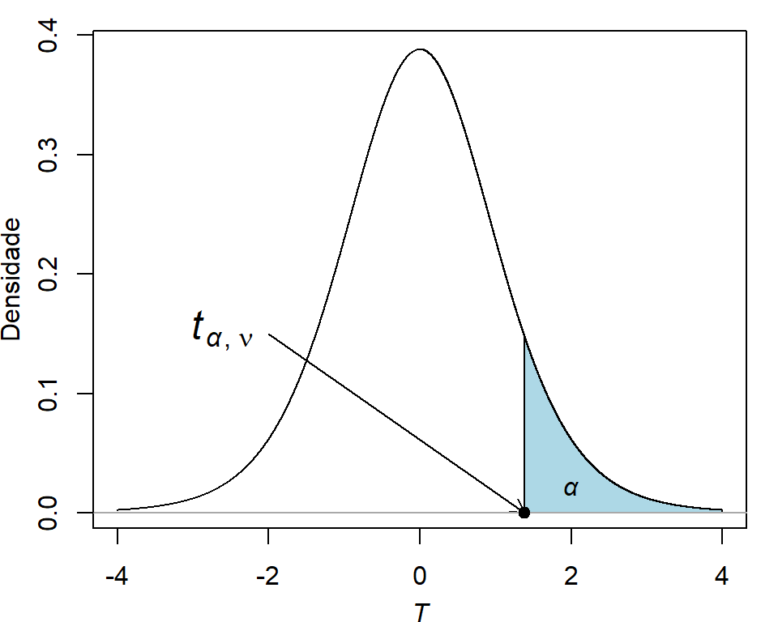
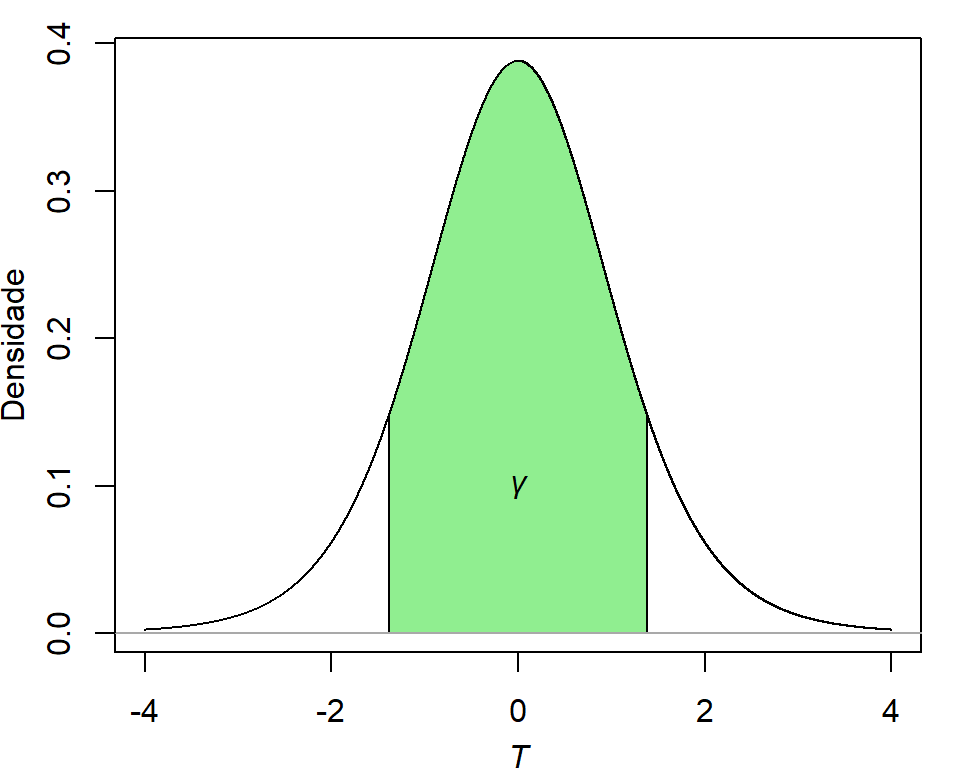
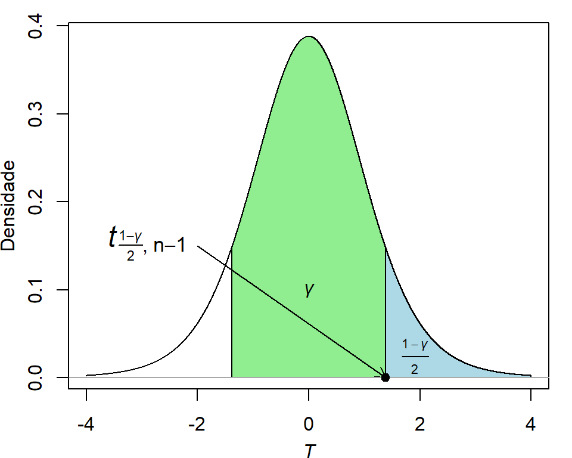
Logo quando \(\sigma^2\) é desconhecida e o tamanho amostral não é grande, se os dados vierem de uma v.a. normal, um IC para \(\mu\) com coeficiente de confiança \(\gamma\) é dado por
\[ \text{IC}(\mu;\; \gamma) = \left[ \bar{X} - t_{\alpha,\ \nu} \frac{S}{\sqrt{n}} \; ; \; \bar{X} + t_{\alpha,\ \nu} \frac{S}{\sqrt{n}} \right]. \]
Continuando o exemplo dos sacos de café, suponha que:
Como \(\sigma^2\) é desconhecida e \(n\) é pequeno (\(n < 30\)), não é razoável recorrer a consistência de \(S^2\). Mas, pela normalidade da população, utilizamos a \(t\)-Student com \(\nu = n-1 = 8\) graus de liberdade.
Para uma confiança de \(\gamma = 0\text{,}95\), temos \(\frac{1-\gamma}{2} = 0\text{,}025\) e \(t_{\alpha,\ \nu} = t_{\frac{1-\gamma}{2},\ n-1} = t_{0\text{,}025,\ 8} = 2\text{,}306\).
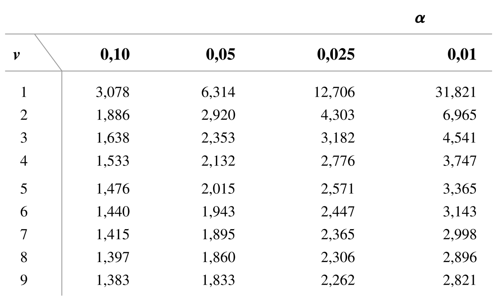
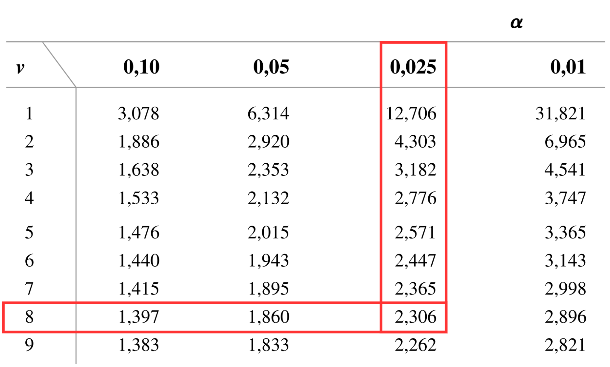
Logo, \[ \begin{aligned} \text{IC}(\mu; \gamma) &= \left[ \bar{X} - t_{\alpha,\ \nu} \frac{S}{\sqrt{n}} \; ; \; \bar{X} + t_{\alpha,\ \nu} \frac{S}{\sqrt{n}} \right]\\ &= \left[ 485 - 2\text{,}306 \times \frac{14}{3}; \; 485 + 2\text{,}306 \times \frac{14}{3} \right]\\ &= [474\text{,}24;\ 495\text{,}76] \end{aligned} \]
Comparando com o IC anterior (\(n = 49\) e \(\sigma^2 = 196\) conhecida), onde \([481\text{,}08;\ 488\text{,}92]\), percebemos que a amplitude do intervalo aumentou consideravelmente.
Esse aumento é reflexo do menor tamanho amostral e da variabilidade extra desencadeada pela aproximação de \(\sigma^2\) por \(S^2\).
Entretanto, as conclusões obtidas não foram alteradas. Isto é, como o IC obtido não cobre o valor original de \(\mu = 500\), com confiança de 95%, podemos afirmar que a máquina se desregulou.
Seja \(X_1, \ldots, X_n\) uma aa de uma população \(\text{Exp}(\lambda)\). Vimos que o EMV de \(\lambda\) é \(\hat\lambda = \frac{1}{\bar{X}}\). Vamos utilizar \(\hat\lambda\) para criar dois IC para \(\lambda\).
No caso de grandes amostras, como \(\hat\lambda\) depende de \(\bar{X}\), podemos utilizar o TCL para aproximar a distribuição de \(Z_n = \frac{\bar{X} - \mu}{\sigma/\sqrt{n}}\) pela normal-padrão. Considerando que \(\mu = \sigma = \frac{1}{\lambda}\), temos \[ \begin{aligned} \gamma &\approx P\left(-z_{\frac{\gamma}{2}} < \frac{\bar{X} - 1/\lambda}{1/(\lambda\sqrt{n})} < z_{\frac{\gamma}{2}}\right) = P\left(-z_{\frac{\gamma}{2}}\frac{1}{\sqrt{n}} < \lambda\bar{X} - 1 < z_{\frac{\gamma}{2}}\frac{1}{\sqrt{n}}\right)\\ &= P\left(\frac{1}{\bar{X}}\left[1-z_{\frac{\gamma}{2}}\frac{1}{\sqrt{n}}\right] < \lambda < \frac{1}{\bar{X}}\left[1+z_{\frac{\gamma}{2}}\frac{1}{\sqrt{n}}\right]\right) = P\left(\hat\lambda\left[1-z_{\frac{\gamma}{2}}\frac{1}{\sqrt{n}}\right] < \lambda < \hat\lambda\left[1+z_{\frac{\gamma}{2}}\frac{1}{\sqrt{n}}\right]\right) \end{aligned} \] Logo, um IC para \(\lambda\) com confiança (aproximadamente) \(\gamma\) é \[ \text{IC}(\lambda, \gamma) = \left[ \hat\lambda\left(1-z_{\frac{\gamma}{2}}\frac{1}{\sqrt{n}}\right);\ \hat\lambda\left(1+z_{\frac{\gamma}{2}}\frac{1}{\sqrt{n}}\right) \right]. \]
Em pequenas amostras, o TCL pode fornecer uma aproximação imprecisa. Nesse caso, podemos recorrer ao fato que \(\sum_{i=1}^nX_i \sim \text{Gama}(n, \frac{1}{\lambda})\) e que \(\sum_{i=1}^nX_i = n\bar{X} = \frac{n}{\hat\lambda}\). Além disso, das propriedades da distribuição Gama, podemos concluir que \(\lambda \frac{n}{\hat\lambda} \sim \text{Gama}(n, 1)\), a distribuição gama-padrão.
Definindo \(g_{p,\alpha}\) tal que \(P(\text{Gama}(\alpha,1) \leq g_{p,\alpha}) = p\), temos que
| \(\gamma\) | \(=\) | \(P\left(g_{\frac{1-\gamma}{2},\ n} < \lambda \frac{n}{\hat\lambda} < g_{\frac{1+\gamma}{2},\ n}\right)\) |
| \(=\) | \(P\left(g_{\frac{1-\gamma}{2},\ n}\frac{\hat\lambda}{n} < \lambda < g_{\frac{1+\gamma}{2},\ n}\frac{\hat\lambda}{n}\right)\) |
Assim, outro IC para \(\lambda\) com confiança \(\gamma\) é \[ \text{IC}(\lambda, \gamma) = \left[g_{\frac{1-\gamma}{2},\ n}\frac{\hat\lambda}{n};\ g_{\frac{1+\gamma}{2},\ n}\frac{\hat\lambda}{n}\right]. \]
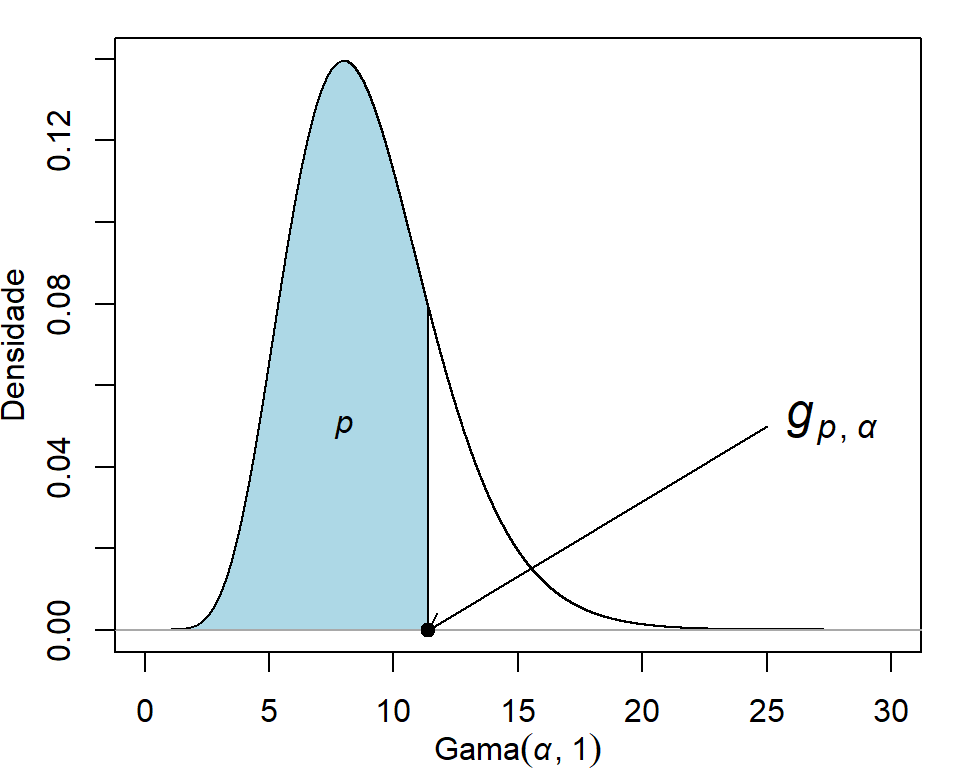
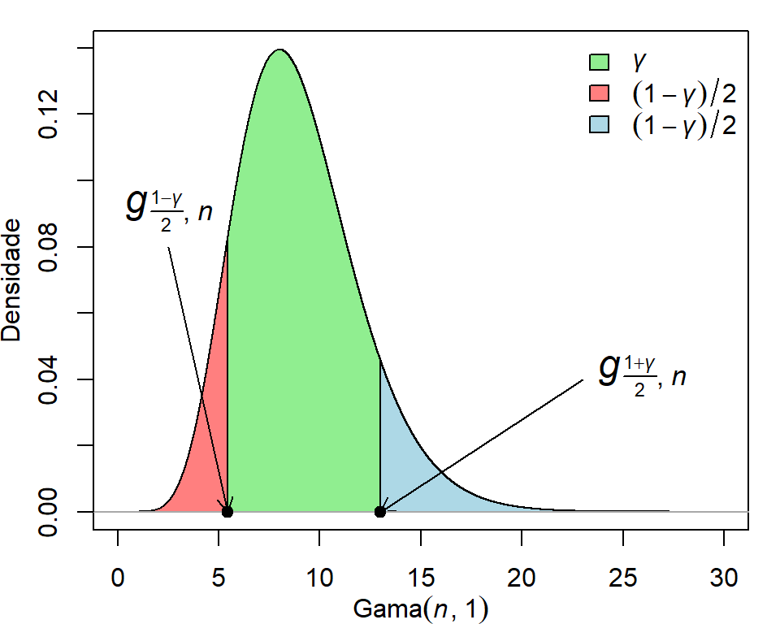
Determinado tipo de bomba de aquecimento tem distribuição \(\text{Exp}(\lambda)\). Uma aa de \(n = 9\) bombas produziu \(\hat\lambda = 0\text{,}237\).
Para uma confiança \(\gamma = 0\text{,}95\), temos o quantil da normal-padrão \(z_{\frac{\gamma}{2}} = z_{0\text{,}475} = 1\text{,}96\), e os da Gama \(g_{\frac{1-\gamma}{2},\ n} = g_{0\text{,}025,\ 9} \approx 4\) (valor exato 4,115) e \(g_{\frac{1+\gamma}{2},\ n} = g_{0\text{,}975,\ 9} \approx 15\) (valor exato 15,763).
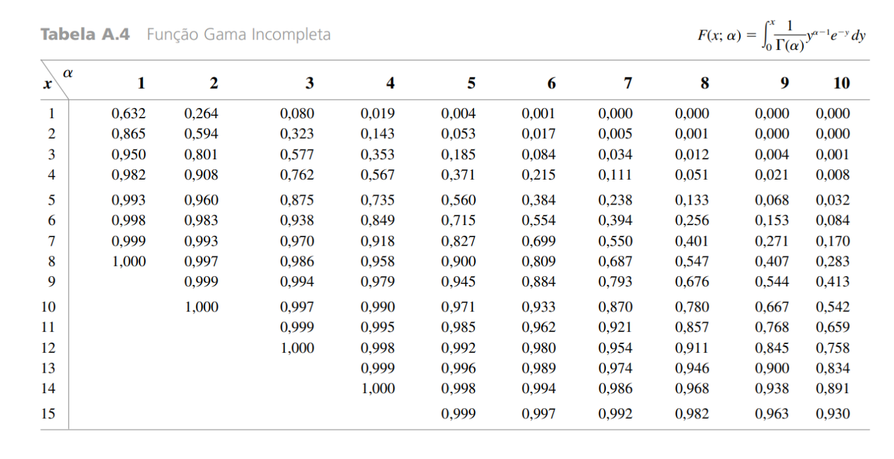
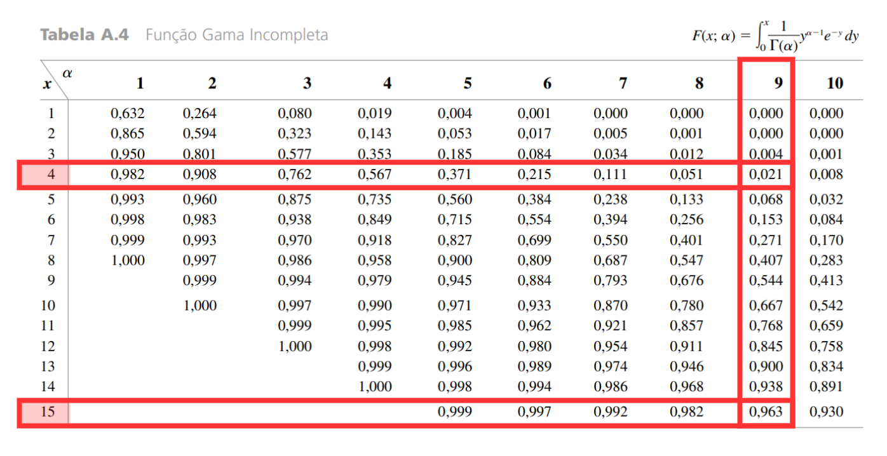
Com confiança \(\gamma = 0\text{,}95\), os IC aproximado pelo TCL e “exato” são dados, respectivamente, por \[ \textstyle \text{IC}(0\text{,}95; \lambda) = \left[ \hat\lambda\left(1\pm z_{\frac{\gamma}{2}}\frac{1}{\sqrt{n}}\right)\right] = \left[0\text{,}237\left(1\pm \frac{1\text{,}96}{3}\right)\right] = [0\text{,}082;\ 0\text{,}392], \] \[ \textstyle \text{IC}(0\text{,}95; \lambda) = \left[g_{\frac{1-\gamma}{2},\ n}\frac{\hat\lambda}{n};\ g_{\frac{1+\gamma}{2},\ n}\frac{\hat\lambda}{n}\right] = \left[4\frac{0\text{,}237}{9};\ 15\frac{0\text{,}237}{9}\right] = [0\text{,}105;\ 0\text{,}395]. \]
Este material não tem conteúdo gerado por ferramentas de inteligência computacional.
O conteúdo disponível consiste em material protegido pela legislação brasileira, sendo certo que, por ser o detentor dos direitos sobre o conteúdo disponível na plataforma, o LECON e o NEAEST detém direito exclusivo de usar, fruir e dispor de sua obra, conforme Artigo 5o, inciso XXVII, da Constituição Federal e os Artigos 7o e 28o, da Lei 9.610/98. A divulgação e/ou veiculação do conteúdo em sites diferentes à plataforma e sem a devida autorização do LECON e o NEAEST, pode configurar violação de direito autoral, nos termos da Lei 9.610/98, inclusive podendo caracterizar conduta criminosa, conforme Artigo 184o, §1o a 3o, do Código Penal. É considerada como contrafação a reprodução não autorizada, integral ou parcial, de todo e qualquer conteúdo disponível na plataforma.

Material elaborado pela equipe LECON: Alessandro J. Q. Sarnaglia, Bartolomeu Zamprogno, Fabio A. Fajardo, Luciana G. de Godoi e Nátaly A. J. Monroy.